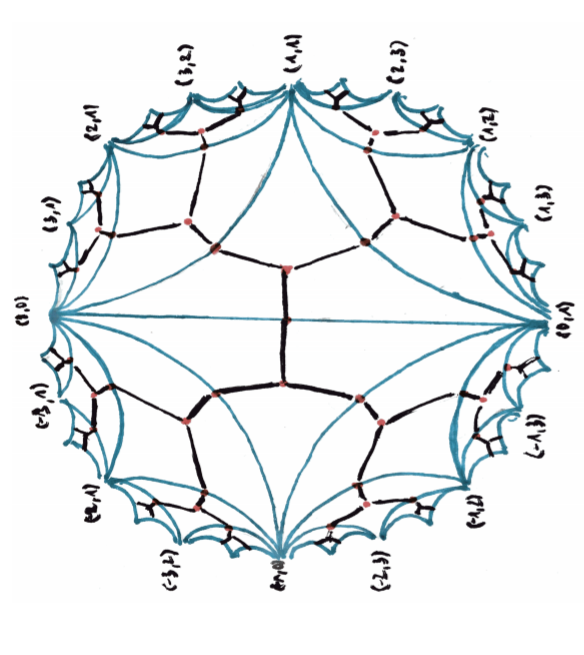

Geometry of sums of squares
greg mc
October 2021

- Proofs from THE BOOK
- Convexity and Aigner’s Conjectures
- Can I prove these with one figure ?
Markov numbers are integers that appear in triples which are solutions of a Diophantine equation the so-called Markov cubic
x2 + y2 + z2 − 3xyz = 0.
(1, 1, 1), (1, 1, 2), (1, 2, 5), (1, 5, 13)
Infinity of Markoff numbers
$\begin{pmatrix} 3 & -1 \\ 1 & 0 \end{pmatrix}$ is an automorph of x2 + y2 − 3xy.
so (vn, vn + 1, 1) is a solution where
$\begin{pmatrix}v_{n+1} \\ v_n \end{pmatrix} = \begin{pmatrix} 3 & -1 \\ 1 & 0 \end{pmatrix}^n \begin{pmatrix}1 \\ 1 \end{pmatrix}$
Odd index Fibonacci numbers are Markoff numbers
1, 1, 2, 3, 5, 8, 13, 21, 34, 55, 89, 144, 233, 377, 610, 987, 1597, 2584, 4181, 6765, 10946, 17711, 28657, 46368, 75025, 121393, 196418, 317811, ...
(1, 1, 1), (1, 1, 2), (1, 2, 5), (1, 5, 13)
Frobenius uniqueness conjecture
The largest integer in a triple determines the two other numbers.
Partial results
m = Markoff number
- Jack Button for m prime
- Zhang An elementary proof…
- Baragar m, 3m - 2, 3m + 2 prime
- Bugeaud, Reutenauer, Siksek
- Conclusion too hard!!!
Aigner’s monotonicity conjectures
- Markov’s theorem and 100 years of the uniqueness conjecture. A mathematical journey from irrational numbers to perfect matchings. 2013.
- M. Rabideaua, R. Schiffler, Continued fractions and orderings on the Markov numbers, Advances in Mathematics Vol 370, 2020.
- C Lagisquet and E. Pelantová and S. Tavenas and L. Vuillon, On the Markov numbers: fixed numerator, denominator, and sum conjectures.
Natural map ?
ℚ ∪ ∞→ Markoff numbers
p/q ↦ mp, q
- projective GL(2, ℤ) action on ℚ ∪ ∞
- action on Markoff numbers ?
- automorphisms of the Markoff cubic?
Automorphisms
- (cyclic) permutations of x, y, z
- Vieta flips/involutions
- get ℤ/2 * ℤ/3 action
- = PSL(2, ℤ) action
Vieta flips/involutions
x2 + y2 + z2 − 3xyz = 0.
- quadratic in x, two roots x±
- x+ + x− = 3yz
- involution (x, y, z) ↦ (3yz − x, y, z)
Natural = PSL(2, ℤ)-equivariant map
ℚ ∪ ∞→ Markoff numbers p/q ↦ mp/q
- (1 : 1) ↦ 1/1 ↦ 2
- (0 : 1) ↦ 0/1 ↦ 1
- (1 : 0) ↦ ∞ ↦ 1
- actions = projective on left and by autos on right
Topological representation
ℚ ∪ ∞⊂ circle/projective line
- (a, b) primitive ↦ a/b ∈ ℚ ∪ ∞
- $\begin{pmatrix} a & c \\ b & d \end{pmatrix} \mapsto$ arc joining (a/b, c/d)
- (a/b, c/d) are Farey neighbors



Markoff numbers